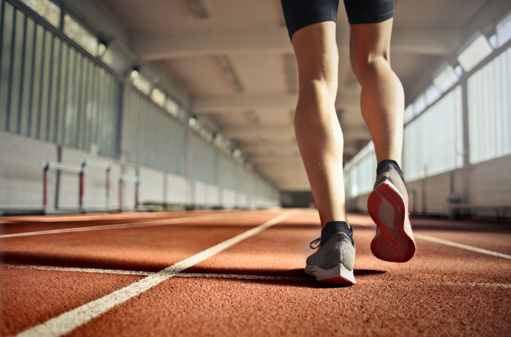

Terug naar beginpagina

Coos de Vroom
Geachte, Coos
In de eerder gestuurde mail die u mij hebt gestuurd heb ik vernomen dat u problemen heeft met u gewicht en hier mee WORSTelt. In deze mail heeft u ook verteld dat u te weinig groente en fruit eet en juist te veel junkfood. Om u van uw probleem te verlossen ga ik het hebben over de volgende topics: Gezonde voeding, een gezonde levensstijl en bijpassende dieet plan.
Topic 1: Gezonde voeding
Gezonde voeding is zeer belangrijk. Door gezond te eten heb je een hogere levensverwachting en minder kans op ziekten. De schijf van vijf kan goed helpen bij gezond eten. Deze schijf bestaat vijf indeling die er voor zorgen dat je alle benodigde voedingsstoffen binnen krijgt. Deze voedingsstoffen zijn nodig om de dag door te brengen. Een gezonde eetpatroon zorgt er voor dat je fit blijft en zo dus minder vaak ziek wordt. Zo’n gezonde regime bestaat uit genoeg groente, fruit, noten, vis en volkoren producten met zo min mogelijk verzadigde vetten. Het teveel innemen van suiker en zout kan er ook weer voor zorgen dat uw gewicht toe neemt. Bij gezonde voeding praten we ook over BMI en calorieën. BMI staat voor body mass index en toont aan of je gewicht gezond is voor je leeftijd of niet. En calorieën is de eenheid voor de voedingswaarde van voedsel. Aangezien uw BMI te hoog is moet er hard gewerkt worden. Dit proces kan soms wel maanden duren en u heeft dus veel discipline en motivatie nodig. U moet minder en gezonder gaan eten om uw gewenste BMI te bereiken. Om u hiermee te helpen heb ik wat tips voor u hieronder genoteerd:
Drink 1.5 à 2 liter water per dag
Eet elke dag een handje noten Eet minstens 2 ons groente per dag Consumeer zo min mogelijk slowfood, frisdrank en andere etenswaren waarvan ze veel calorieën bevatten. Zorg er voor dat je genoeg vitaminen en vezels binnen krijgt
Eet minstens 2 ons groente per dag Consumeer zo min mogelijk slowfood, frisdrank en andere etenswaren waarvan ze veel calorieën bevatten. Zorg er voor dat je genoeg vitaminen en vezels binnen krijgt
Topic 2: Gezonde levensstijl
Een gezonde levensstijl is een combinatie tussen gezond eten, genoeg bewegen en af en toe je rust nemen. Ook is het van belang bij een gezonde levensstijl dat je niet te veel alcohol drinkt, aan drugs doet of rookt. Deze dingen kunnen zeer schadelijk zijn en kunnen je levensverwachting inkorten wanneer je er te veel van inneemt. U moet uw zelf een gezonde levensstijl aanleren en er aan wennen, waardoor het uiteindelijk een fractie van je dagelijkse routine wordt. Een tip is om elke dag minstens 30 minuten te gaan rennen of te gaan sporten. Hierdoor verbetert je conditie en je gezondheid in het algemeen.
Topic 3: Dieet Plan
Om u te helpen van uw overgewicht af te komen heb ik een dieetplan voor u samengesteld. De benodigde hoeveelheid aan calorieën op uw leeftijd ligt rond de 2400. Om af te vallen moet u onder de 2400 kcal per dag innemen. We gaan het elke week een klein beetje afbouwen. Dit wordt gedaan om u te laten wennen aan het minder eten. De eerste week moet u dagelijks 2200 kcal binnen krijgen. Zorg er wel voor om minstens 1700 kcal per dag binnen te krijgen. Als u dit niet doet kunt u mogelijke eetbuien krijgen, waardoor u de neiging krijgt om weer veel te gaan eten, wat kan resulteren dat u aankomt. Ik raad u ook aan om veel eiwitten te eten. Eiwitten zitten in tonijn, eieren, zalm, rundvlees, kip, kalkoen en in magere kwark. Eiwitten zorgen er voor dat je langer vol zit en zijn de bouwstenen van ons lichaam. In uw dieet plan zitten dan ook veel producten met eiwitten.
| Dagen | Ontbijt | Lunch | Avondeten | Snacks | Calorieen |
|---|---|---|---|---|---|
| Dag 1 | Kwark met nootjes en een lepeltje honing | Hummus van kikkererwten | Spaghetti met garnalen, groene asperges en doperwten | Appel met een dipsaus (gemaakt van kwark) van pinda | 1761 kcal |
| Dag 2 | Havermout pap met blauwe bessen | Kalkoensoep | Zalm met groente en aardappeltjes | Havermout koekjes | 1883 kcal |
| Dag 3 | Boerenomelet | Tonijnsalade met tomaten, komkommer en sla | Salade met kip en avocado dressing | Banaan met pindakaas en daar op nootjes | 1862 kcal |
Ik hoop al u vragen te hebben kunnen beantwoorden. Stuur mij gerust nog een mailtje als u toch nog een vraag heeft.
Met vriendelijk groet, Nayef Alkhateb